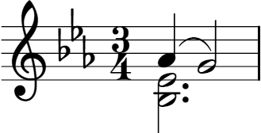

| [ << Notensatz ] | [Anfang][Inhalt][Index][ ? ] | [ Literatur >> ] | ||
| [ < Die Geschichte von LilyPond ] | [ Nach oben : Notensatz ] | [ Notenschriftarten > ] | ||
1.2 Details des Notensetzens
Die Kunst des Notensatzes wird auch als Notenstich bezeichnet. Dieser Begriff stammt aus dem traditionellen Notendruck1. Noch bis vor etwa 20 Jahren wurden Noten erstellt, indem man sie in eine Zink- oder Zinnplatte schnitt oder mit Stempeln schlug. Diese Platte wurde dann mit Druckerschwärze versehen, so dass sie in den geschnittenen und gestempelten Vertiefungen blieb. Diese Vertiefungen schwärzten dann ein auf die Platte gelegtes Papier. Das Gravieren wurde vollständig von Hand erledigt. Es war darum sehr mühsam, Korrekturen anzubringen, weshalb man von vornherein richtig schneiden musste. Die Kunst des Notenstechens war eine sehr spezialisierte Handwerkskunst, für die ein Handwerker etwa fünf Ausbildungsjahre benötigte, bevor der den Meistertitel tragen durfte. Weitere fünf Jahre waren erforderlich, um diese Kunst wirklich zu beherrschen.

LilyPond wurde von den handgestochenen traditionellen Noten inspiriert, die in der ersten Hälfte des 20. Jahrhunderts von europäischen Notenverlagen herausgegeben wurden (insbesondere Bärenreiter, Duhem, Durand, Hofmeister, Peters und Scott). Sie werden teilweise als der Höhepunkt des traditionellen Notenstichs angesehen. Beim Studium dieser Editionen haben wir eine Menge darüber gelernt, was einen gut gesetzten Musikdruck ausmacht und welche Aspekte des handgestochenen Notensatzes wir in LilyPond imitieren wollten.
| Notenschriftarten | ||
| Optischer Ausgleich | ||
| Hilfslinien | ||
| Optische Größen | ||
| Warum der große Aufwand? |
| [ << Notensatz ] | [Anfang][Inhalt][Index][ ? ] | [ Literatur >> ] | ||
| [ < Details des Notensetzens ] | [ Nach oben : Details des Notensetzens ] | [ Optischer Ausgleich > ] | ||
Notenschriftarten
Die Abbildung unten illustriert den Unterschied zwischen traditionellem Notensatz und einem typischen Computersatz. Das linke Bild zeigt ein eingescanntes b-Vorzeichen einer handgestochenen Bärenreiter-Edition, das rechte Bild hingegen ein Symbol aus einer 2000 herausgegebenen Edition der selben Noten. Obwohl beide Bilder mit der gleichen Tintenfarbe gedruckt sind, wird die frühere Version dunkler: die Notenlinien sind dicker und das Bärenreiter-b hat ein rundliches, beinahe sinnliches Aussehen. Der rechte Scan hingegen hat dünnere Linien und eine gerade Form mit scharfen Ecken und Kanten.
 |  | |
| Bärenreiter (1950) | Henle (2000) |
Als wir uns entschlossen hatten, ein Programm zu schreiben, das die Typographie des Notensatzes beherrscht, gab es keine freien Musikschriftarten, die unserem geplanten eleganten Notenbild passen würden. Unbeirrt schufen wir eine Schriftart und dazu einen Computerfont mit den musikalischen Symbolen, wobei wir uns an den schönen Musikdrucken der handgestochenen Noten orientierten. Ohne diese Erfahrung hätten wir nie verstanden, wie hässlich die Schriftarten waren, die wir zuerst bewunderten.
Unten ein Beispiel zweier Notenschriftarten. Das obere Beispiel ist der Standard im Sibelius-Programm (die Opus-Schriftart), das untere unsere eigene LilyPond-Schriftart.

Die LilyPond-Symbole sind schwerer und ihre Dicke ist durchgängiger, wodurch sie einfacher zu lesen sind. Feine Enden, wie etwa die Seiten der Viertelpause, sollten nicht als scharfe Spitzen enden, sondern etwas abgerundet. Das liegt daran, dass scharfe Enden der Stempel sehr fragil sind und sich schnell durch die Verwendung abnutzen. Zusammengefasst muss die Schwärze der Schriftart sehr vorsichtig mit der Schwärze von Notenlinien, Balken und Bögen abgeglichen werden, um ein starkes, aber doch ausgewogenes Gesamtbild zu ergeben.
Einige weitere Besonderheiten: der Notenkopf der Halben ist nicht elliptisch, sondern etwas rautenförmig. Der vertikale Hals des b-Symbols ist schwach keilförmig nach oben hin. Das Kreuz und das Auflösungszeichen sind einfacher aus der Entfernung zu unterscheiden, weil ihre schrägen Linien eine andere Neigung haben und die vertikalen Linien dicker sind.
| [ << Notensatz ] | [Anfang][Inhalt][Index][ ? ] | [ Literatur >> ] | ||
| [ < Notenschriftarten ] | [ Nach oben : Details des Notensetzens ] | [ Hilfslinien > ] | ||
Optischer Ausgleich
Die Aufteilung der Noten in der Horizontalen sollte die Dauer der jeweiligen Note widerspiegeln. Wie wir jedoch im Beispiel der Bach-Suite oben sehen konnten, orientieren sich viele moderne Partituren an den Dauern mit mathematischer Präzision, was zu schlechten Ergebnissen führt. Im nächsten Beispiel ist ein Motiv zweimal dargestellt: das erste Mal mit exakter mathematischer Aufteilung, das zweite Mal mit Korrekturen. Welches Beispiel spricht Sie mehr an?
![[image of music]](../6c/lily-15c3b141.png)
![[image of music]](../95/lily-184c0193.png)
In jedem Takt in diesem Ausschnitt kommen Noten vor, die in einem gleichmäßigen Rhythmus gespielt werden. Die Abstände sollten das widerspiegeln. Leider lässt uns aber das Auge im Stich: es beachtet nicht nur den Abstand von aufeinander folgenden Notenköpfen, sondern auch den ihrer Hälse. Also müssen Noten, deren Hälse in direkter Folge zuerst nach oben und dann nach unten ausgerichtet sind, weiter auseinander gezogen werden, während die unten/oben-Folge engere Abstände fordert, und das alles auch noch in Abhängigkeit von der vertikalen Position der Noten. Das untere Beispiel ist mit dieser Korrektur gesetzt. Im oberen Beispiel hingegen bilden sich für das Auge bei unten/oben-Folgen Notenklumpen. Ein Notenstechermeister hätte die Notenaufteilung angepasst, sodass die angenehm zu lesen ist.
Die Algorithmen zur Platzaufteilung von LilyPond berechnen sogar die Taktstriche mit ein, weshalb die letzte Noten mit Hals nach oben im richtig platzierten Beispiel etwas mehr Platz vor dem Taktstrich erhält, damit sie nicht gedrängt wirkt. Ein Hals nach unten würde diesen Ausgleich nicht benötigen.
| [ << Notensatz ] | [Anfang][Inhalt][Index][ ? ] | [ Literatur >> ] | ||
| [ < Optischer Ausgleich ] | [ Nach oben : Details des Notensetzens ] | [ Optische Größen > ] | ||
Hilfslinien
Hilfslinien stellen eine typographische Herausforderung dar: sie machen es schwerer, die Notensymbole dicht anzuordnen und sie müssen klar genug sein, dass sich die Tonhöhe mit einem schnellen Blick erkennen lässt. Im Beispiel unten können wir sehen, dass Hilfslinien dicker als normale Notenlinien sein sollten und dass ein gelernter Notenstecher eine Hilfslinie verkürzt, um dichteres Platzieren von Versetzungszeichen zu erlauben. Wir haben diese Eigenschaft in den Notensatz von LilyPond eingebaut.
 |  |
| [ << Notensatz ] | [Anfang][Inhalt][Index][ ? ] | [ Literatur >> ] | ||
| [ < Hilfslinien ] | [ Nach oben : Details des Notensetzens ] | [ Warum der große Aufwand? > ] | ||
Optische Größen
Noten werden in verschiedenen Größen gedruckt. Ursprünglich hatte man hierzu Stempel in verschiedenen Größen, was gleichzeitig heißt, dass jeder Stempel so beschaffen war, dass er für seine Größe ein ideales Abbild erzeugte. Mit den digitalen Fonts kann ein einziger Umriss mathematisch skaliert werden, um eine beliebige Größe zu erzeugen, was sehr viele Vorteile hat. In kleinen Größen erscheinen die Symbole jedoch zu dünn.
Für LilyPond haben wir Schriftarten mit einer Reihe von Dicken erstellt, die jeweils einer Notengröße entsprechen. Hier ein LilyPond-Notensatz mit der Systemgröße 26:

und hier die gleichen Noten mit Systemgröße 11, anschließend um 236% vergrößert, damit das Bild in exakt der gleichen Größe wie das vorige erscheint:

Bei kleineren Größen benutzt LilyPond proportional dickere Notenlinien, sodass das Notenbild immer noch gut zu lesen ist.
| [ << Notensatz ] | [Anfang][Inhalt][Index][ ? ] | [ Literatur >> ] | ||
| [ < Optische Größen ] | [ Nach oben : Details des Notensetzens ] | [ Automatisierter Notensatz > ] | ||
Warum der große Aufwand?
Musiker sind üblicherweise zu sehr damit beschäftigt, die Musik aufzuführen, als dass sie das Aussehen der Noten studieren könnten; darum mag diese Beschäftigung mit typographischen Details akademisch wirken. Das ist sie aber nicht. Notenmaterial ist Aufführungsmaterial: alles muss unternommen werden, damit der Musiker die Aufführung besser bewältigt, und alles, das unklar oder unangenehm ist, ist eine Hindernis.
Der dichtere Eindruck, den die dickeren Notenlinien und schwereren Notationssymbole schaffen, eignet sich besser für Noten, die weit vom Leser entfernt stehen, etwa auf einem Notenständer. Eine sorgfältige Verteilung der Zwischenräume erlaubt es, die Noten sehr dicht zu setzen, ohne dass die Symbole zusammenklumpen. Dadurch werden unnötige Seitenumbrüche vermieden, so dass man nicht so oft blättern muss.
Dies sind die Anforderungen der Typographie: Das Layout sollte schön sein – nicht nur aus Selbstzweck, sondern vor allem um dem Leser zu helfen. Für Aufführungsmaterial ist das umso wichtiger, denn Musiker haben eine begrenzte Aufnahmefähigkeit. Je weniger Mühe nötig ist, die Noten zu erfassen, desto mehr Zeit bleibt für die Gestaltung der eigentlichen Musik. Das heißt: Gute Typographie führt zu besseren Aufführungen!
Die Beispiele haben gezeigt, dass der Notensatz eine subtile und komplexe Kunst ist und gute Ergebnisse nur mit viel Erfahrung erlangt werden können, die Musiker normalerweise nicht haben. LilyPond stellt unser Bemühen dar, die graphische Qualität handgestochener Notenseiten ins Computer-Zeitalter zu transportieren und sie für normale Musiker erreichbar zu machen. Wir haben unsere Algorithmen, die Gestalt der Symbole und die Programm-Einstellungen darauf abgestimmt, einen Ausdruck zu erzielen, der der Qualität der alten Editionen entspricht, die wir so gerne betrachten und aus denen wir gerne spielen.
Fußnoten
[1] Frühe europäische Drucker versuchten sich an verschiedenen Techniken wie handgeschnitzten Holzblöcken, beweglichen Lettern und gravierten dünnen Metallblechen. Der Satz mit Lettern hat den Vorteil, dass man ihn schnell korrigieren kann und auch Text einfach einfügen kann, aber nur der Notenstich als Gravur ermöglichte die Möglichkeit, lebendiges Layout ohne Qualitätsabstriche zu erstellen. So wurden der Notenstich mit der Hand bis ins 20. Jahrhundert zum Standard für alle gedruckten Noten, ausgenommen einige Hymnale und Liederbücher, wo der Letterdruck durch seine Einfachheit und Kostenersparnis gerechtfertigt war.
| [ << Notensatz ] | [Anfang][Inhalt][Index][ ? ] | [ Literatur >> ] | ||
| [ < Optische Größen ] | [ Nach oben : Details des Notensetzens ] | [ Automatisierter Notensatz > ] | ||
Andere Sprachen: English, español, français, magyar, italiano.
About automatic language selection.